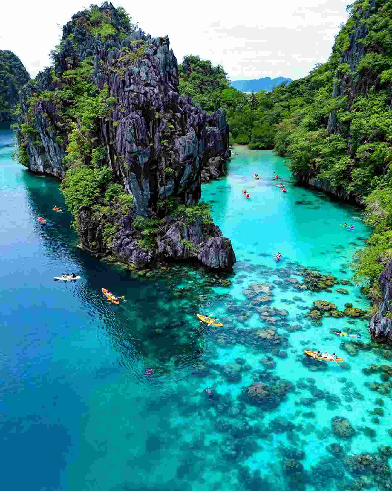

Palawan is one province, but El Nido, Coron and Puerto Princesa behave like three separate trips. El Nido is limestone cliffs and lagoon-hopping, Coron is sunken warships and clear inland lakes, and Puerto Princesa is the practical one: a real city with an airport, a UNESCO-listed river cave and the easiest logistics of the three.
If you are starting from Cebu, the first decision is which airport to fly into, because that choice shapes everything after it. Flights link Cebu with Puerto Princesa, with Busuanga for Coron, and with El Nido's Lio Airport, so you can skip Manila. Schedules and operators shift between seasons, so check each route on the airline's own booking page before you build a plan around it.
Below is how the three bases compare, what each one does best, and how to link them without wasting a day in transit.

The Short Answer: Which One Fits You?
Pick El Nido if scenery is the point and you want to spend your days on a boat among limestone islands. Pick Coron if you dive or snorkel, or if wrecks and lakes sound better than lagoons. Pick Puerto Princesa if you have only a few days, are travelling with children or older relatives, or want the Underground River without long road transfers.
If you can only choose one and you have never been, El Nido is the classic first Palawan. If you already know the lagoons from photographs and want something different, Coron gives you a less polished, more underwater version of the same province.
El Nido: Cliffs, Lagoons and Island Hopping
El Nido town faces Bacuit Bay, a scatter of steep limestone islands that rise straight out of the water. The town beach is a working boat landing rather than a swimming beach, so the island tours are the main event. They are sold as lettered routes, usually Tours A, B, C and D, and the operators in town all use the same names.
Tour A is the standard first day, with the Big and Small Lagoons, the Secret Lagoon and Seven Commandos Beach among its stops. Tour C leans toward Hidden Beach, the Matinloc Shrine and quieter coves, and tours B and D take in caves and more remote beaches. Boats typically leave in the morning and are back by mid to late afternoon. Entry to the busiest lagoon stops has been managed with timed slots and separate fees in recent years, so ask your operator how that works on the day you go.
For swimming off your own doorstep, look at Corong Corong, which is calmer and a short ride from town, or Lio, a longer beach with resorts and sunset views. Nacpan, about 14 kilometres north, is a long open beach that suits a day away from boats.
The trade-offs are worth knowing. El Nido has the most visitors of the three, the lagoons fill up from mid-morning, and beachfront accommodation is the priciest in Palawan. Evenings are livelier than in Coron, with more bars and restaurants. Choose an early departure and a weekday if crowds bother you.
Coron: Wrecks, Lakes and Dive Culture
Coron town sits on Busuanga Island, not on Coron Island itself. The famous lakes and lagoons are across the water on Coron Island, a short boat ride away, and the town is a more modest, harbour-front place built around tour offices and dive shops.
Kayangan Lake is often described as one of the cleanest lakes in the country, and you reach its viewpoint by a steep stairway. Twin Lagoon is known for the layering of warm and cooler water where fresh and salt water meet. Barracuda Lake is a favourite of divers for its sharp thermoclines. Most of these are bundled into the standard island tours.
The wrecks are the other reason to come. Japanese supply ships were sunk in Coron Bay in 1944, and a number of them now lie at depths that suit recreational divers. Some sit shallow enough that snorkellers can see parts of the structure on a calm day, so you do not need a tank to get a look. If you do not dive, ask any tour operator whether a wreck snorkel stop is included before you book.
Back on land, the Maquinit hot spring is a short tricycle ride from town and makes a good end to a boat day. Evenings are quiet, and travellers who want nightlife will find El Nido easier. Costs sit in the middle, though diving adds up quickly.
Puerto Princesa: The Easy Base and the Underground River
Puerto Princesa is the provincial capital and the main transport hub. It has hospitals, malls, a large range of rooms and generally gentler prices than the two island towns. It is not a beach destination, and that is its honest limit: if white sand every day is your goal, you will move on.
The headline attraction is the Puerto Princesa Subterranean River National Park, a UNESCO World Heritage Site roughly 80 kilometres north of the city. You need a permit to enter, and you go by boat from Sabang and then paddle into the cave with a guide. Plan on most of a day with the road transfer, and secure your permit ahead of time because slots can sell out in the busy months.
Honda Bay is the gentler alternative for families. Its islands have shallow water and short boat rides, so it suits younger children and anyone who does not want a full-day lagoon circuit. Treat Puerto Princesa as an arrival and departure point with a day or two of sightseeing, not a long stay.
Side-by-Side Comparison
- Scenery: El Nido for limestone cliffs and lagoons, Coron for lakes and wrecks, Puerto Princesa for the river cave.
- Swimming near town: None of the three towns is a true beach resort. Lio and Corong Corong (El Nido) and Honda Bay (Puerto Princesa) are the practical swim spots.
- Diving and snorkelling: Coron is the standout for wrecks, El Nido is good for reef and lagoon snorkelling, and Honda Bay is easy and shallow.
- Cost: Puerto Princesa tends to be the cheapest, El Nido beachfront the highest, and Coron in between until you add diving.
- Nightlife: El Nido is the liveliest, Coron is quiet, and Puerto Princesa has city restaurants and bars.
- Crowds: The main lagoons in El Nido and Kayangan Lake in Coron are busiest from mid-morning, so go early.
Getting to Palawan From Cebu
There is no ferry from Cebu to Palawan, so you fly. The flight to any of the three gateways takes a little over an hour, so Palawan is closer to Cebu than many people assume.
Cebu to Puerto Princesa
This is usually the most frequent route and often the easiest on the wallet. It is the sensible choice if you want the Underground River first, or if you plan to travel overland to El Nido or Port Barton afterwards. The road from Puerto Princesa to El Nido takes roughly five to six hours by van, so count it as a travel day.
Cebu to El Nido
Flying straight into Lio Airport puts you minutes from El Nido town and saves the long van ride. The trade-off is that seats are fewer and fares are usually higher than flying to Puerto Princesa, and small aircraft are more affected by weather. Book early and keep a buffer day on the way home.
Cebu to Busuanga for Coron
Busuanga's airport is about 30 to 45 minutes from Coron town by road. A shared van is the budget option, and a private transfer costs several times more, so agree the price with your hotel before you land.
Linking two bases
The cleanest two-stop plan is to fly Cebu to El Nido, take the fast ferry between El Nido and Coron when it is running, and fly home from Busuanga. Allow roughly four to five hours for the crossing and expect cancellations in rough weather. The other common loop is Cebu to Puerto Princesa, a van to El Nido, then a flight from El Nido back to Cebu. Open-jaw tickets like these are often priced the same as a return, so compare before you assume you must fly out of the airport you came in through.
When to Go and How Long to Stay
The drier months, roughly November to May, are the calmer window for boat trips. March to May is hot and busy. The wetter southwest monsoon months bring more rough seas and a higher chance of cancelled tours, which matters when your return flight is fixed. Our month-by-month guide to Cebu's weather is a useful companion for planning the Cebu end of the trip, though Palawan's conditions differ from the Visayas.
As a rough guide, give a single base four to five days. El Nido plus Coron fits in a week to ten days with the ferry between them. Puerto Princesa plus El Nido takes six to eight days with the Underground River included. Seeing all three comfortably needs ten to fourteen days, and anything shorter will feel like a transfer schedule.
If You Are Weighing Palawan Against the Visayas
A long weekend rarely justifies Palawan, because the transfers eat a lot of time. If you only have two or three days, a shorter hop may be the better use of them. A Camiguin weekend from Cebu or Bohol or a beach stay on Panglao and Alona Beach are both easier to fit in. Divers who mainly want sharks can look at Malapascua's thresher shark dives before committing to Coron's wrecks.
Which Base Should You Book First?
For a first trip from Cebu with five or six days, fly into El Nido and spend the whole time there, adding Tours A and C and one beach day at Nacpan. For a diver, go straight to Coron and plan the wrecks first. For a family or a short visit, base yourself in Puerto Princesa and give one full day to the Underground River and another to Honda Bay. Whatever you choose, treat the flight times and ferry schedules as moving targets and confirm them before you pay for anything non-refundable.